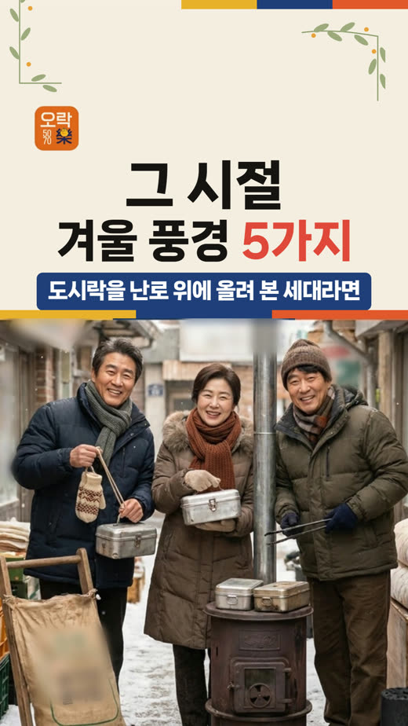
그 시절
겨울 풍경 5가지
이전 편겨울 풍경 5가지
2026년 11월 16일 기준 · 11월 17일(화) 편 확정 + 다음 편 제목 벤치마킹
↓ 최근에 한 일이 맨 위에 있습니다
주신 문구 그대로 넣으려다 한 단어를 줄였습니다. 아래에 이유를 적었습니다.
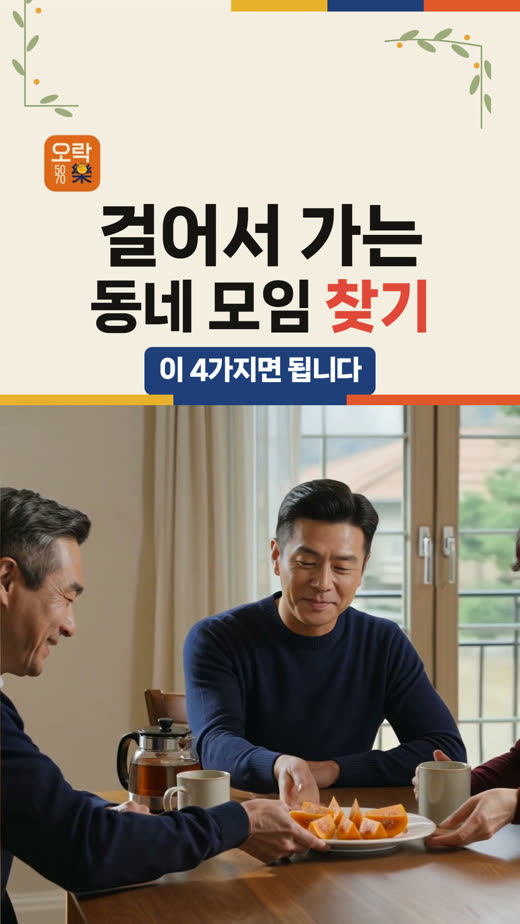
| 글 | 폭 | 한계 | |
|---|---|---|---|
| 동네 모임 찾는 방법 | 953 | 908 | 넘침 |
| 동네 모임 찾기 | 708 | 908 | 들어감 |
글자 크기를 줄이면 다른 썸네일과 통일이 깨지고 5070 가독성도 떨어집니다. 그래서 크기가 아니라 글을 줄였습니다. 뜻은 그대로입니다.
붉은 글자는 「찾기」에 줬습니다. 부제 상자는 남색 바탕에 흰 글씨라 숫자에 붉은색을 넣으면 안 보입니다.
11/17 편 추천 유튜브 제목을 그대로 썸네일로 옮겼습니다.
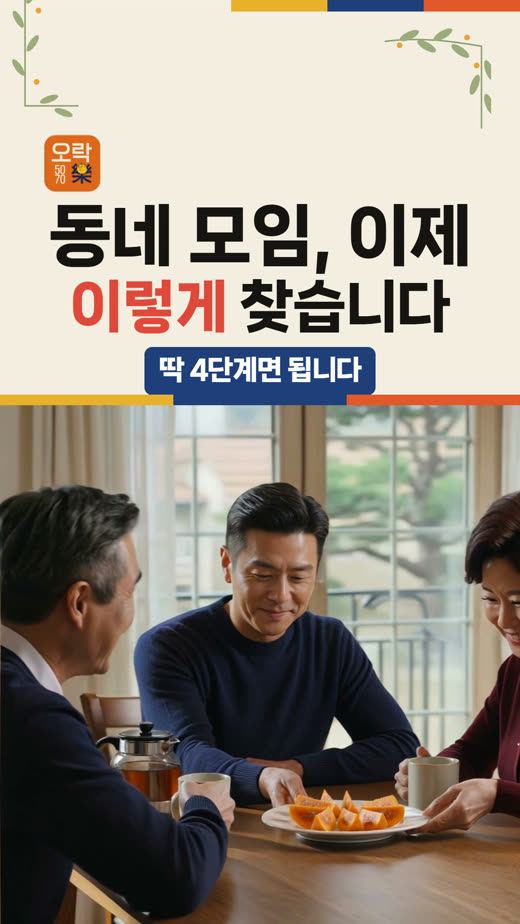
「이제 이렇게 찾습니다」를 한 줄에 넣으면 1035px로 한계(908px)를 넘어 잘립니다. 그래서 「이제」를 1줄 끝으로 올렸습니다.
붉은 글자는 「이렇게」에 줬습니다. 「어떻게?」를 묻게 만드는 자리라, 핵심을 가리는 말이 상위권에 2.5배 몰렸던 그 자리입니다.
부제 「딱 4단계면 됩니다」는 숨긴 것의 크기만 알려 줍니다. 제목과 겹치는 단어가 없습니다.
실제 유튜브 화면에서 「5070이 읽기 어렵다」는 지적을 받고, 안전구역 안에서 최대로 키웠습니다.
| 줄 | 전 | 후 | 한계 | 무엇에 막히나 |
|---|---|---|---|---|
| 1줄 | 118px | 138px | 144px | 「동네 모임 장소」 875px |
| 2줄 | 106px | 117px | 118px | 9글자 줄 — 이미 한계 |
| 부제 | 52px | 56px | 56px | 「도시락을 난로 위에…」 — 이미 한계 |
쓸 수 있는 폭은 제목 908px · 부제 848px입니다. 감으로 정하지 않고 모든 줄을 크기별로 실제로 쟀습니다. 2줄과 부제는 더 키우면 잘립니다. 더 크게 보이고 싶으면 크기가 아니라 글을 줄입니다.
9장 모두 다시 뽑았고, 업로드본 4장도 바꿨습니다.
시니어 채널 10곳 영상 473개를 모아 한국어 제목 174개를 분석한 뒤 만든 두 장입니다.
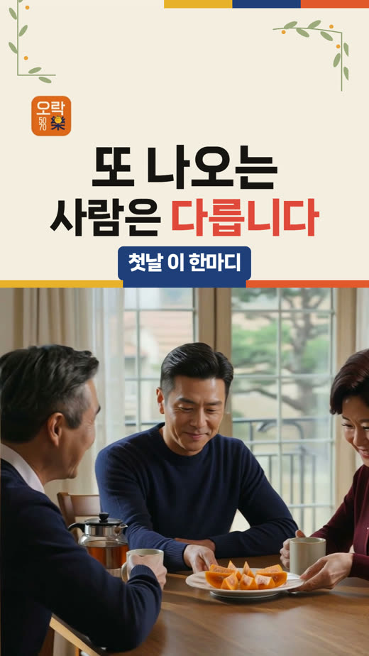
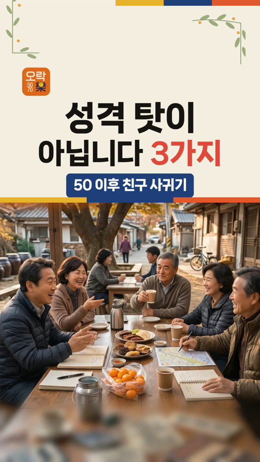
상위 제목 일곱 개가 전부 같은 구조였습니다.
사람을 둘로 가르고, 가르는 기준은 숨긴다
독자는 정보가 궁금해서가 아니라 자기가 어느 쪽인지 확인하려고 누릅니다. 「또 나오는 사람」과 「한 번 가고 마는 사람」으로 갈라 놓으면, 모임에 나가 본 사람은 확인하러 들어옵니다.
| 제목에 쓰는 장치 | 전체 | 상위권 | 쏠림 |
|---|---|---|---|
| 핵심을 '이것'으로 가리기 | 6% | 16% | 2.5배 |
| 반말 단정형 「~한다」 | 6% | 16% | 2.5배 |
| 숫자 들어감 | 35% | 44% | 1.3배 |
| 나이·세대 호명 | 29% | 36% | 1.3배 |
| 존댓말 종결 | 11% | 12% | 1.1배 |
| 느낌표 | 13% | 4% | 0.3배 역효과 |
문어체냐 구어체냐 — 숫자만 보면 반말이 2.5배지만, 오락은 출시 전 브랜드 채널이라 「~해라」를 쓰면 5070 독자에게 무례하게 읽힙니다. 존댓말은 유지하되 종결을 단정형으로 가는 것이 답입니다. 「준비하고 있어요」(약함) → 「~입니다」(단정).
남은 것 하나 — 사진
위 두 장은 이미 쓴 사진을 돌려썼습니다. 09번은 04번과, 08번은 02번과 같은 사진입니다. 채널 목록에 나란히 뜨면 같은 영상을 두 번 올린 것처럼 보입니다.
무료 사이트 세 곳을 검색어 14개로 찾았지만 오락에 맞는 한국 50대 사진이 없었습니다 (Pexels는 70~80대 다큐멘터리풍, Unsplash는 한복 사진, Pixabay는 서양 노부부와 일러스트). 그래서 클링으로 만들 장면 두 개를 프롬프트로 써 뒀습니다.
사진 초점이 가장 선명한 구간에서 뽑은 두 장입니다.
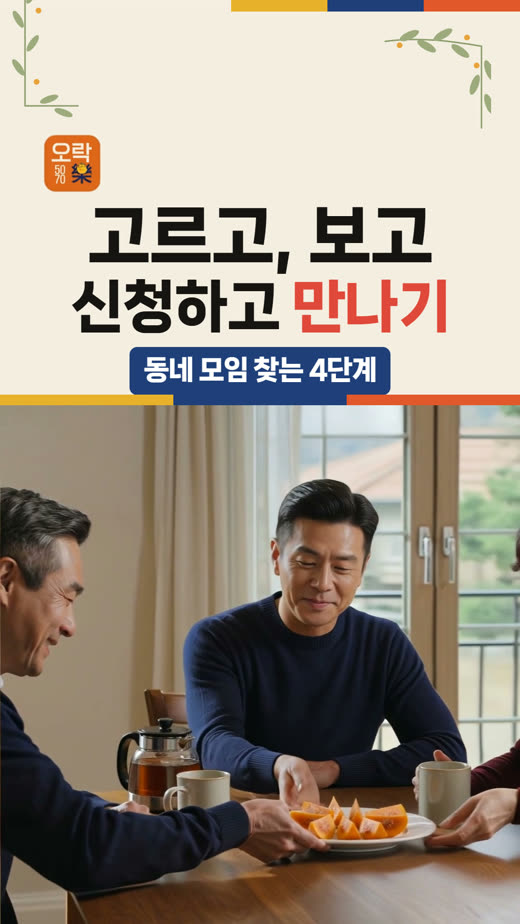
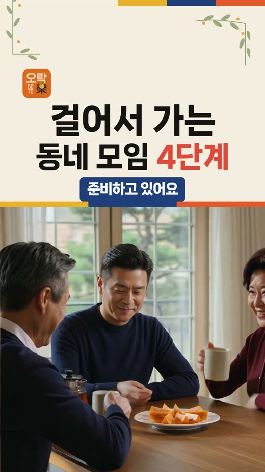
05번은 쓰지 않습니다
주제캡션.md에 「관심사 하나 골랐을 뿐인데, 약속이 생겼습니다」를 바꾼 기록이 있습니다. 이유는 출시 전 서비스인데 실제로 써 본 후기처럼 읽힌다는 것이었습니다.
05번 썸네일도 같은 과거형(생겼습니다)이라 같은 문제가 있습니다. 그래서 릴스용은 07번으로 정했습니다. 07번의 「준비하고 있어요」는 준비 중임을 분명히 말합니다.
모두 바탕화면 ▸ 썸네일_작업 ▸ 오락폼 에 있습니다.

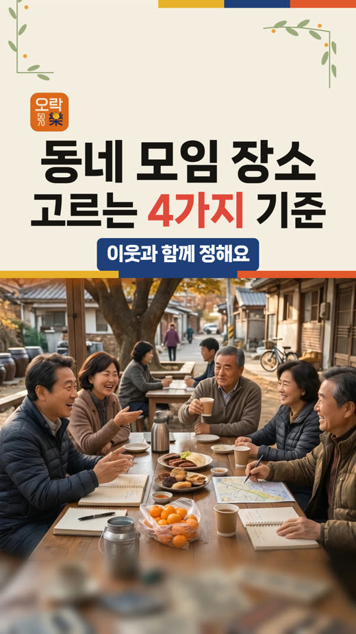
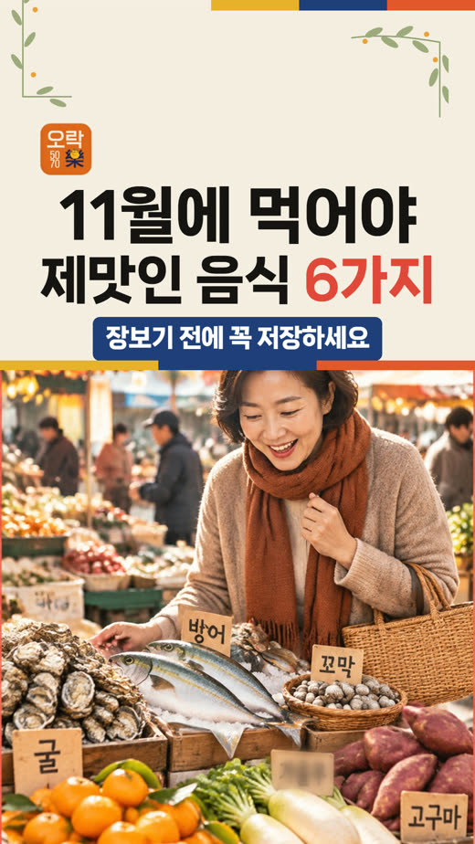
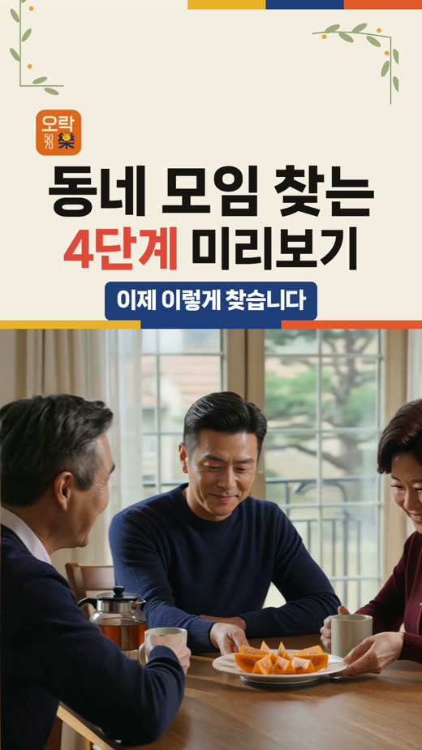
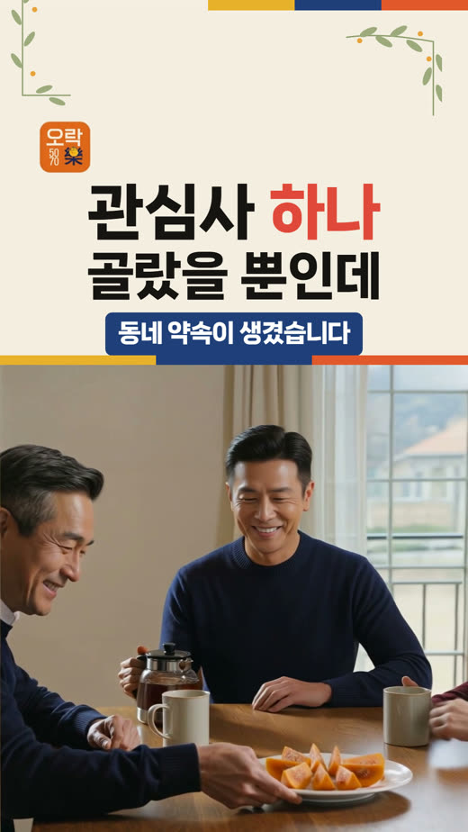
사진만 손봤습니다. 공통 폼(orak.css)은 한 글자도 건드리지 않았고, 원본 사진도 모두 남겼습니다.
영상01.mp4를 0.25초 간격으로 선명도를 잰 결과입니다. 10초 이후는 쓰지 않습니다.
| 구간 | 선명도 | 쓴 곳 |
|---|---|---|
| 4.50초 | 198 | 05번 릴스 |
| 6.00초 | 209 | 06번 쇼츠 — 가장 선명 |
| 7.50초 | 79 | 04번 |
| 8.50초 | — | 07번 |
| 10.00초 이후 | 16 | 초점 나감 · 쓰지 않음 |
크롬이 예전 사진을 기억해 다시 뽑아도 PNG가 안 바뀌는 일이 있었습니다. 사진을 바꿨는데 그대로면 이 때문입니다.